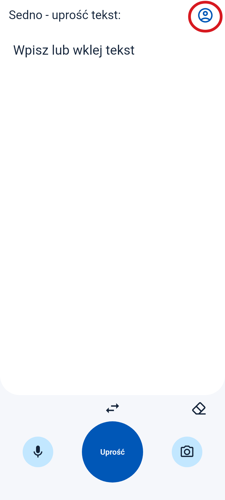
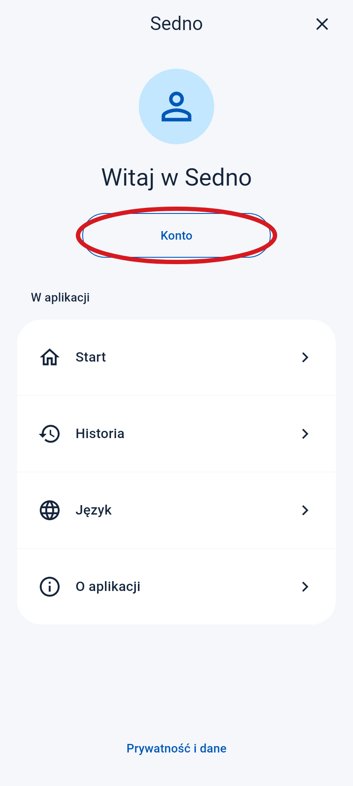
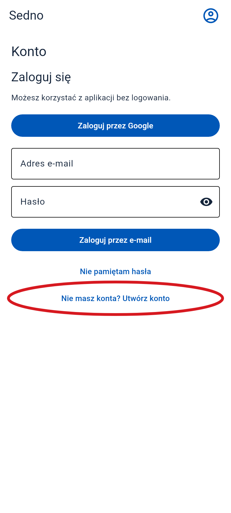
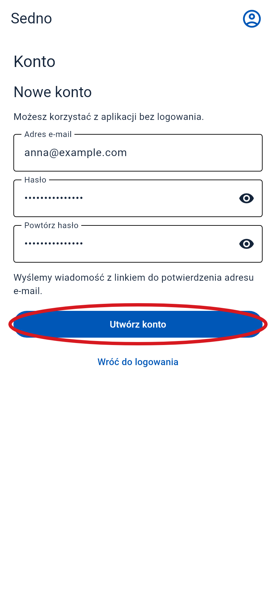
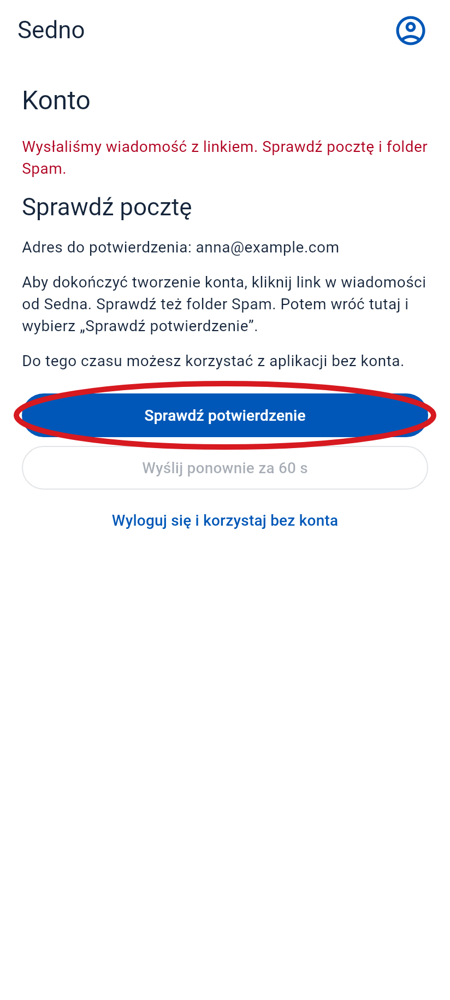
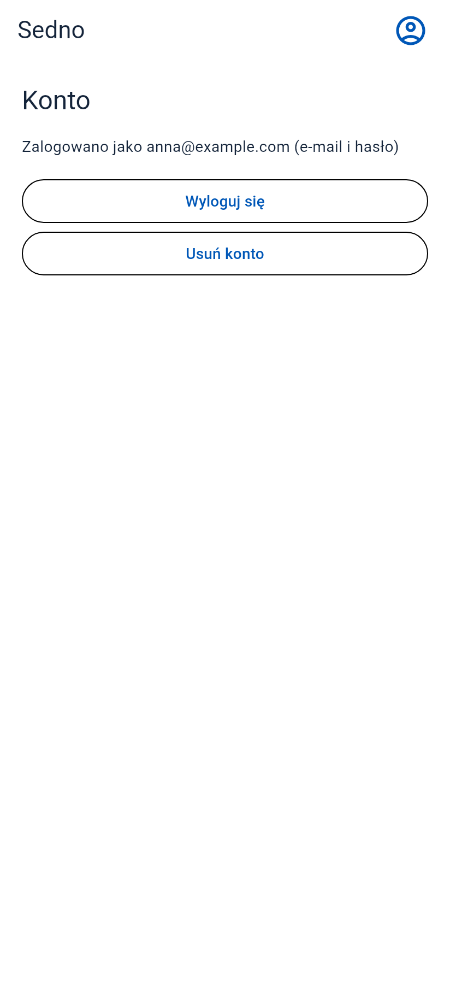

Jak założyć konto
Otwórz Sedno na telefonie. Zrób po kolei te kroki.
Czerwone kółko pokazuje, gdzie nacisnąć. Ekrany pochodzą z aplikacji. E-mail jest przykładowy.
-
1 Otwórz menu
Naciśnij ikonę osoby u góry, po prawej.
Kliknij tu

-
2 Wybierz „Konto”
Naciśnij przycisk w czerwonym kółku.
Kliknij tu

-
3 Wybierz założenie konta
Naciśnij „Nie masz konta? Utwórz konto”. Jeśli nie widzisz przycisku, przesuń ekran w górę.
Kliknij tu

-
4 Wpisz e-mail i hasło
- Wpisz swój e-mail.
- Wymyśl hasło: co najmniej 6 znaków.
- Niżej wpisz to samo hasło jeszcze raz.
- Naciśnij „Utwórz konto”.

-
5 Otwórz swoją pocztę
Znajdź wiadomość od Sedna. Sprawdź też folder Spam. Otwórz wiadomość i naciśnij link, aby potwierdzić e-mail.
Kliknij tu
Przykładowy e-mail
Sedno
Potwierdź swój adres e-mail w Sednie.
Potwierdź e-mail -
6 Wróć do Sedna
Otwórz znów Sedno. Jeśli ten ekran nadal jest widoczny, naciśnij „Sprawdź potwierdzenie”.
Kliknij tu

-
7 Gotowe!
Widzisz swój e-mail. Twoje konto jest gotowe.
